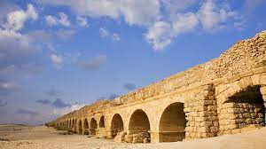

:קצת מידע כללי על הורדוס הורדוס מלך על יהודה בשנת 32 לפני הספירה עד 4 לפני הספירה, הורדוס נולד בשנת 72 לפני הספירה, אימו הייתה משבט הנבטים, לכן היא לא יהודיה, המשפחה של אביו התגיירה ולכן רק אביו נחשב ליהודי ומלך על יהודה עד מותו הורדוס מת בשנת 4 לפני הספירה בגיל 68 בזמן שהוא עדיין מלך על יהודה, הורדוס קיבל את מלכותו על ידי השלטון הרומי, ולכן יהודה סירבה ולא הסכימה למלכותו של הורדוס כיוון שעל פי התורה מלך חייב להיבחר על פי האלוהים מסיבה זאת, יהודה סירבה למלכותו ולא צייתה לחוקו, עם זאת, הורדוס לא תיפך בערים יהודיים, וההדיף לקשט את ערי הנוחרים הורדוס היה זה שתיקן את בית המקדש השני אשר שימש כמקום בעל ערך כלכלי דתי ועיסקי מאוד גבוה הורדוס נודע במפעלי הבנייה האדירים והמפוארים שהקים, הוא בנה מחדש את בית המקדש, והפך אותו למבנה מפואר מאוד, בנה מחדש את העיר שומרון ותיפך את הכלכלה. דומותו של הורדוס נישארה כשליט אכזר, ששלט ביד ברזל |
|
|
לחצו על התמונה למעלה בשביל עמוד 1 |
|
|
לחצו על התמונה למעלה בשביל עמוד 2 |